Elastic Load Balancing and Amazon EC2 Auto Scaling
Mô hình
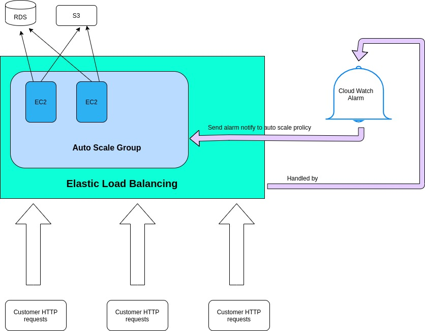
Các steps:
Step 1.1: Tạo EC2 instance.
Phần này dễ ko hướng dẫn.
Step 1.2: Tạo Security Group.
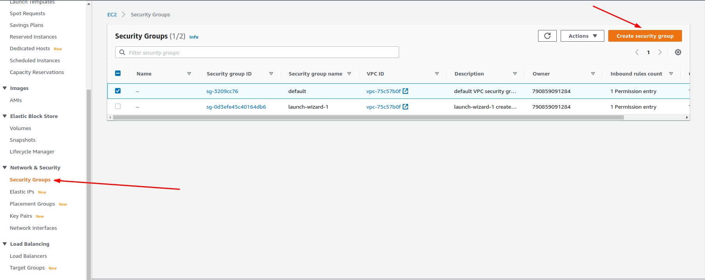
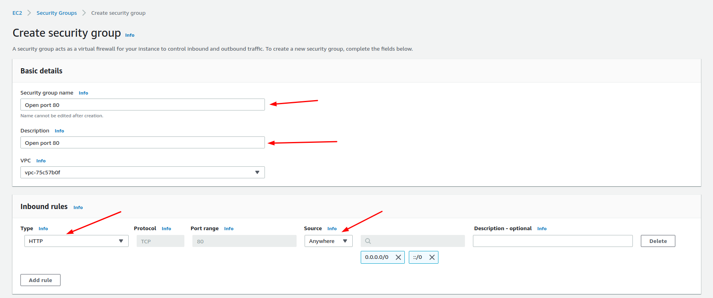
Step 2: Tạo Auto Scaling Group từ EC2.
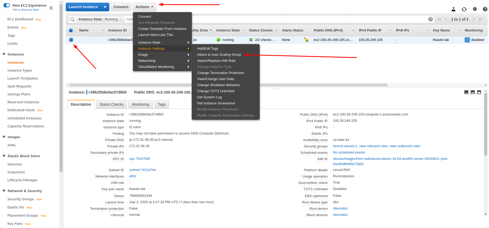
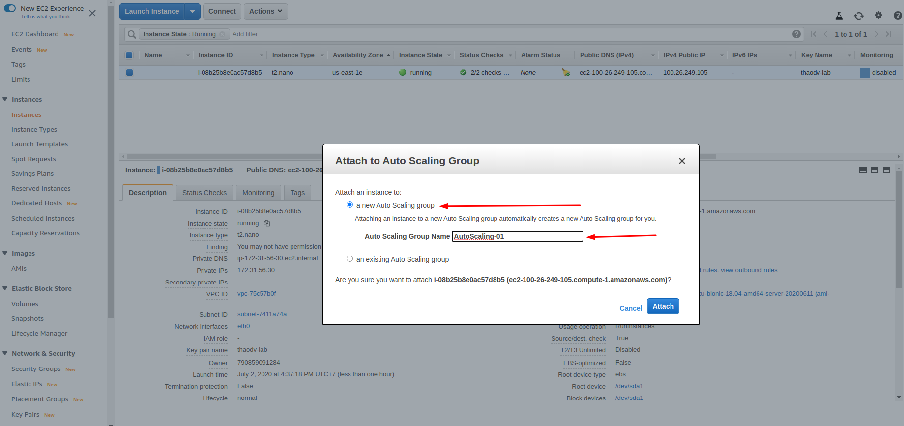
Step 3: Tạo Target Group cho Load Balancing.
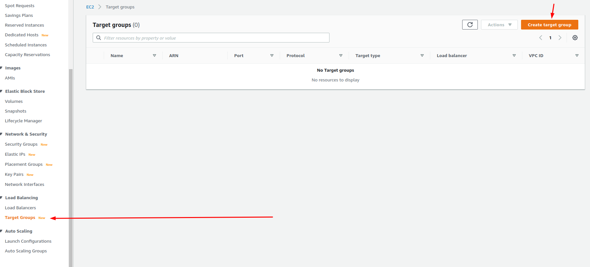
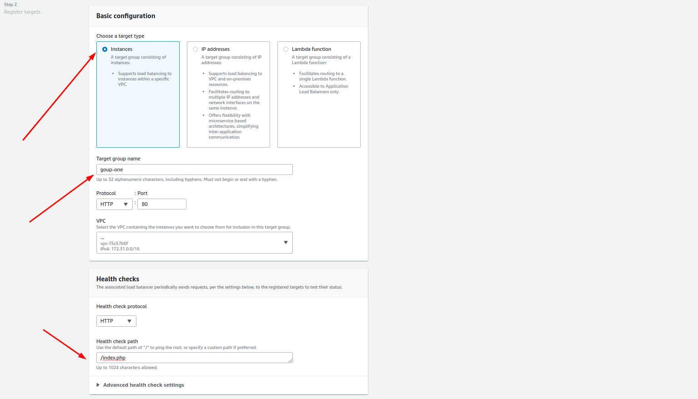
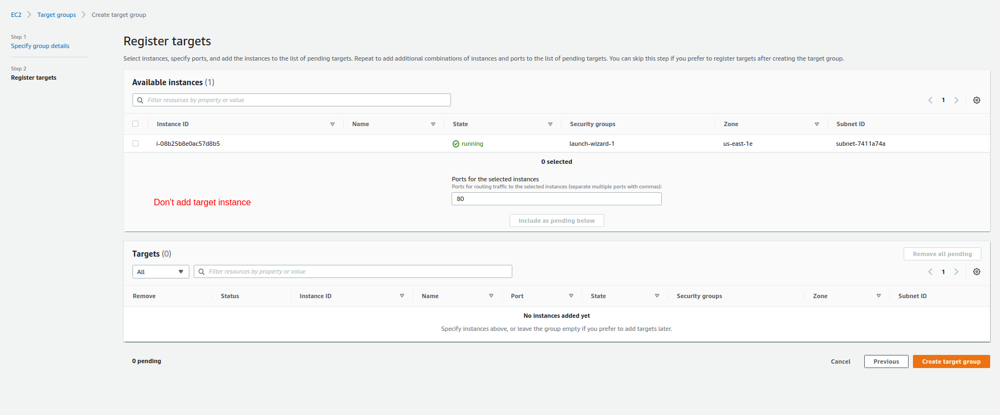
Step 4: Tạo Load Balancer.
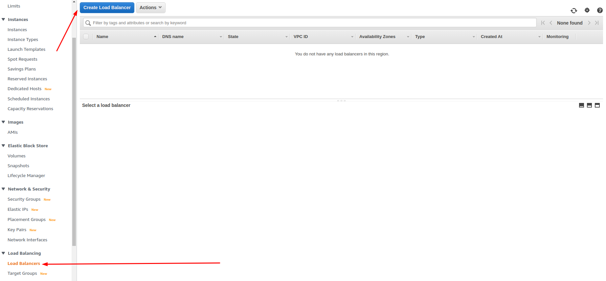
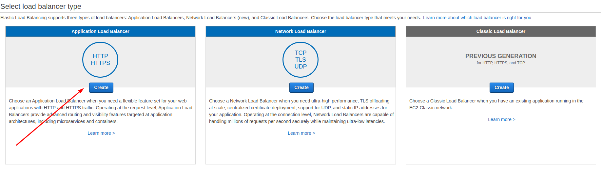
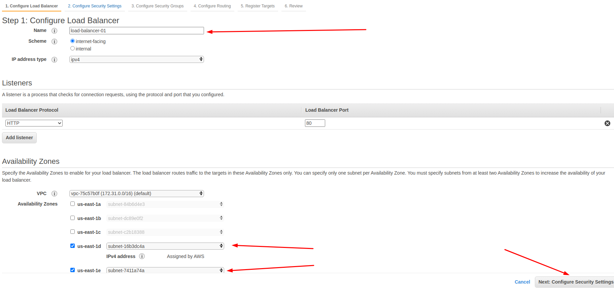
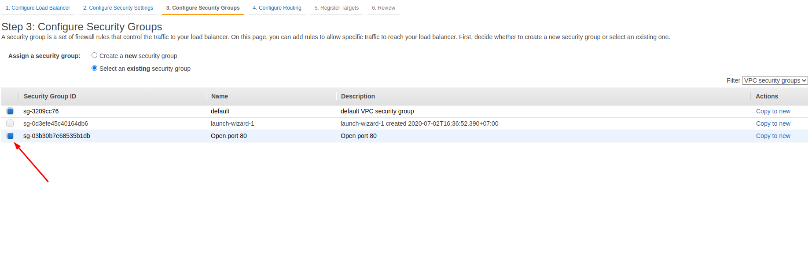
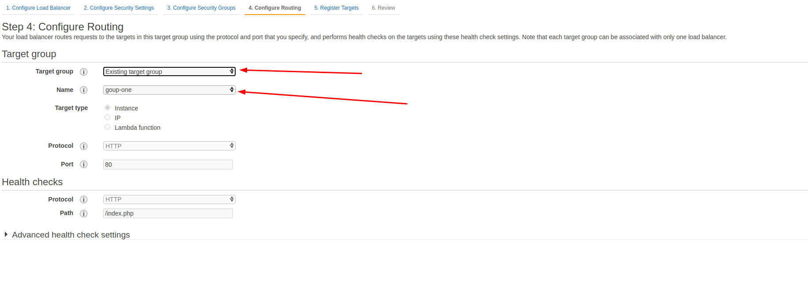
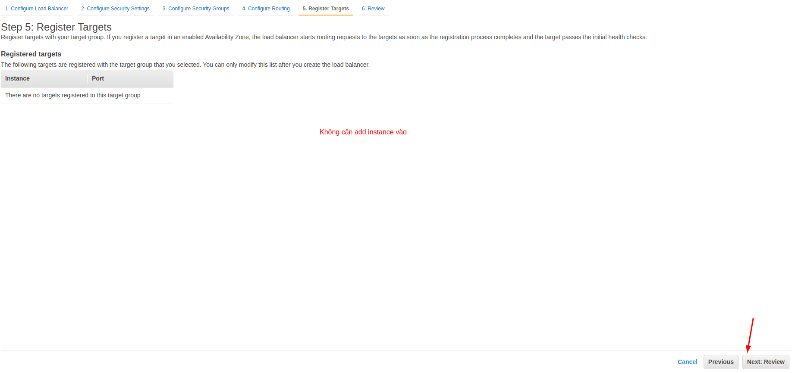
Step 5: Gán Target Groups và Health Check Type cho Target Group(Load Balancing).
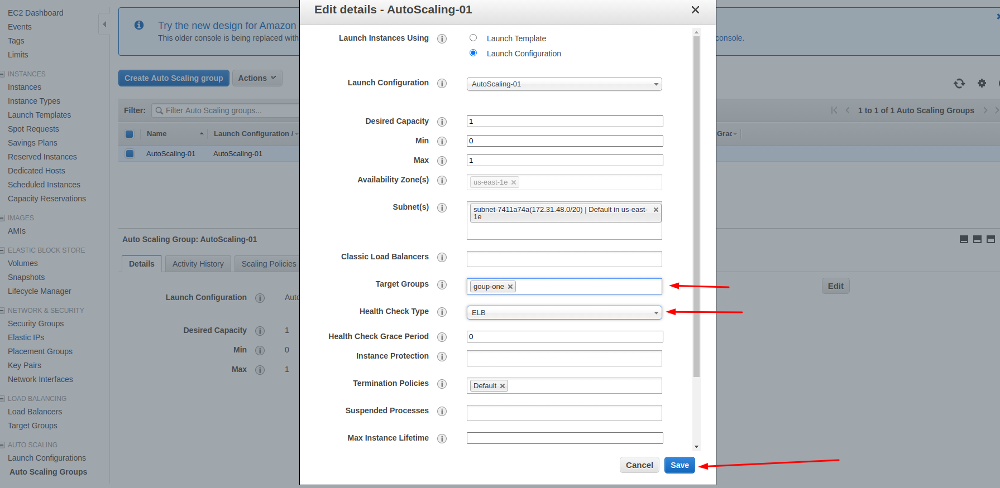
Step 6: Tạo Cloud Swatch Alarm cho ELB.
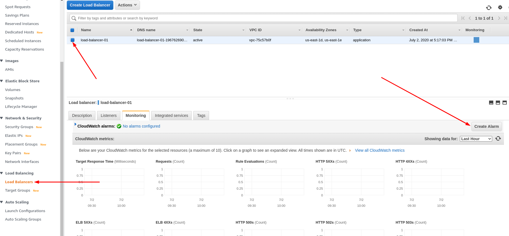
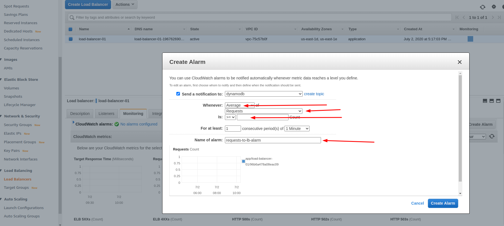
Step 7: Tạo Scaling Policy cho Auto Scaling Group theo Alarm tạo ra từ step 6.
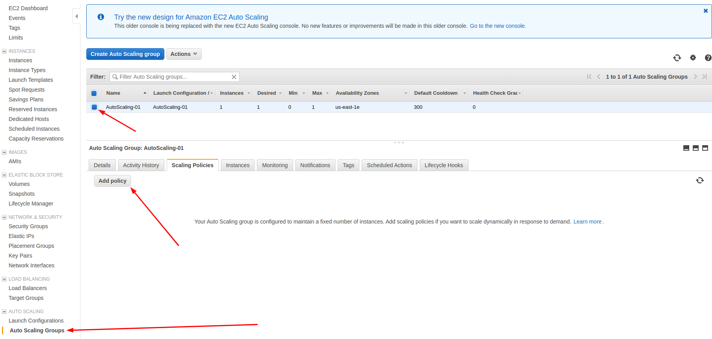
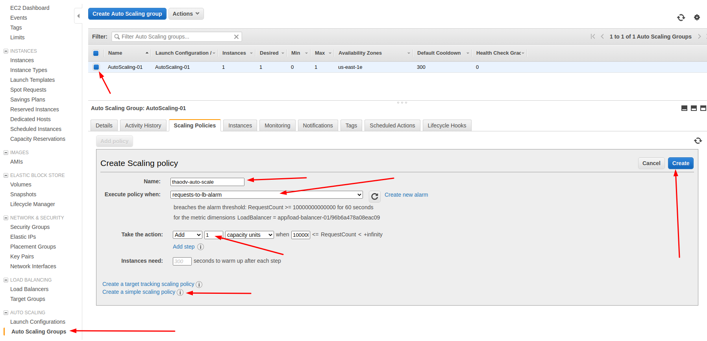